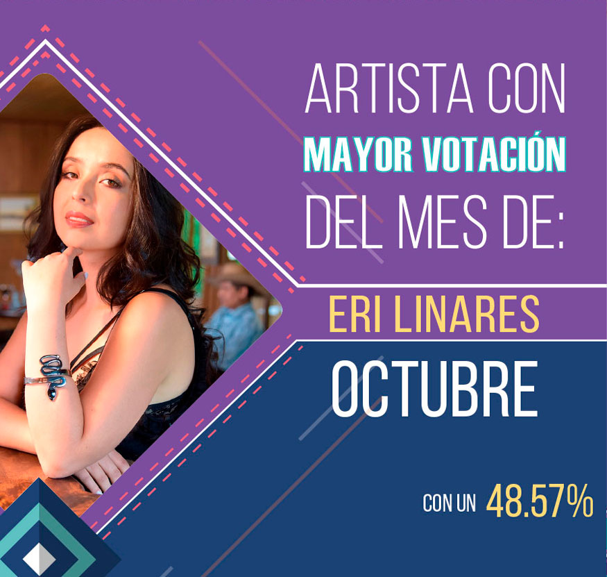
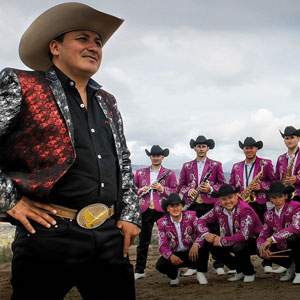

Directorio de Artistas

Alexander González
{kind=link}
Amanda Patricia
 |
La hermosa payanés promete llegar con su nuevo sencillo a todos los rincones de Colombia y ubicarse en los artistas más tops de la música Colombiana regional (popular). "Como me ves más buena", cuenta la historia de esas personas que sin motivo se alejan y terminan una relación, y con el tiempo, por motivos de la vida se vuelven a encontrar y ella “está más buena”, él quiere volver y que todo sea como antes”. |
Aragón
{kind=link}
Danny Moreno
 |
Danny Moreno ha revolucionado el Vallenato con su nuevo sencillo musical “Tú y yo”, el cual viene con una gran fusión urbana pero defendiendo sus raíces vallenatas. Junto a su hermano y acordeonero Jorge Moreno nos muestran una bella historia de amor en medio de la guerra en su cinematográfico video musical ya disponible en YouTube y en todas las plataformas digitales junto con una nueva versión junto al rey del despecho urbano Yelsid (Tú y Yo Remix Ft Yelsid). Contacto:Teléfono: 311 8738015 - 311 2464351 Instagram: @DannyMorenoYLa13 Facebook: Danny Moreno YouTube: Danny Moreno & La 13 |
Dareska
{kind=link}
El Yiyo Bohórquez
 |
Oriundo de Santa Sofía – Boyacá. Cantante, compositor e intérprete del acordeón; desde muy niño su inclinación por el vallenato ha llegado a miles de seguidores con canciones como “Entrégame tu amor”, ahora presenta su nuevo éxito “El amor de mi vida”. |
Eri Linares
 |
Eri Linares, es una artista que desde temprana edad tuvo cercanía con la música, pero inicia su carrera como solista en el 2018 interpretando canciones de género popular y despecho, y presenta su primer trabajo discográfico “Tremendo varón”, un homenaje a los hombres de hogar, decentes y amorosos. Contacto:Teléfono: 317 6483884 Instagram: @EriLinnares Facebook: Eri.Linnares YouTube: Eri Linares Twitter: @EriLinnares |
Fernando Burbano
 |
Fernando Burbano “El principe de la canción popular” después de sus éxitos "Ahora que puedo" y "Doble dosis de licor", presenta su nuevo sencillo: "Entre el amor y el trago" también de su autoría como los anteriores. Contacto: |
Iván Carvajal
 |
Iván Carvajal, cantante y compositor nacido en Solano Caquetá, tiene una larga trayectoria en la música popular colombiana, a sus 26 años lanza su primer sencillo titulado “Pues vete” logrando con este un nuevo formato y ritmo de la música popular éxito que dejará mucha expectativa en las mejores emisoras de radio y canales nacionales de Colombia. Contacto: |
Iván Ovalle
{kind=link}
Janfer
 |
Janfer regresa con su “Amor bandido”. La artista revelación de música popular se complace en presentar su más reciente sencillo musical “Amor Bandido”. Luego del éxito obtenido con “Ya eres leyenda”, “El machito”, “Mi peor fracaso-, “Apenas 20”, “Mi verguenza”, y “Lo que calla una mujer”. |
Jeison Pérez
{kind=link}
Jhoan Ospina
{kind=link}
John Jairo Pérez
{kind=link}
John Yara
 |
John Yara, sigue posicionándose como uno de los artistas más importantes del género popular y presenta su nuevo éxito -Mi gran felicidad-, junto a su agrupación "Indomables de América", siendo una de las más destacadas y admiradas por el público. Contacto: |
Juan Carlos “El Andariego”
{kind=link}
Juan Carlos Ensamble
{kind=link}
Juan Palau
 |
Juan Palau decide hacer... OTRA COSA. Contacto: |
Julián López
{kind=link}
Key Zanto
 |
Zúmbala es el más reciente sencillo de Key Zanto, artista capitalino de tan solo 19 años. En poco tiempo la canción ya cuenta con más de 500.000 visitas en las diferentes plataformas digitales, su talento y persistencia lo ha llevado a estar en grandes tarimas como en El festival del amor, el pasado 22 de septiembre, compartiendo escenario con artistas como: Alexis & Fido, Chencho y Maldyn, “Plan B”, Rakim y Ken, Tego Calderón y Leka El Poeta. |
Los Cantores Koko y Koronel
{kind=link}
Los Bacanes del Sur
 |
Los Bacanes del Sur, son una agrupación de música norteña y popular que viene llenando conciertos en todos los rincones de Colombia y presentan su nuevo éxito "Perdámonos esta noche". Ya se encuentra disponible en audio y video en todas las plataformas digitales. |
Los Inquietos del Vallenato
{kind=link}
Los P–Tres
{kind=link}
Manolo
 |
Manolo, inicia su carrera musical a los 6 años de edad cantando música ranchera con varias agrupaciones de su región. En este 2018 Manolo presenta su nuevo sencillo titulado “No fuimos nada” tema con el cual busca posicionarse como unos de los grandes exponentes de la música popular en Colombia. Contacto: |
Mauricio Ceballos
 |
Mauricio Ceballos, “Puro sentimiento”, inicia este 2018 pisando fuerte con su cuarto sencillo "Estoy mamao", una canción de su autoría y acompañada de su interpretación que les llega a todos y ya se viene su nuevo lanzamiento #NoEsLoMismo de la autoría y producción del Maestro Iván Calderón. Contacto: |
Obando
{kind=link}
Olider Montana
 |
Olider Montana, artista de música popular, nacido en San Luis Tolima, reconocido a nivel nacional e internacional con sus éxitos “Caja de madera”, “Pobre y sincero”, “Fue mi error” y “En ti me tatúe”, entre otros, ahora llega con su nueva propuesta musical “Tres engaños”. |
Omar Pérez y su Banda Platino
|  | La primera banda de música sinaloense en Colombia en la voz del cantante y compositor Omar Pérez, presenta su más reciente éxito musical hecho en Mazatlán – Sinaloa - México, -Si tú te vas- tema de su autoría que traspasa fronteras gracias a sus fans y seguidores del género banda. |
{kind=link}
Orlando López
 |
“Sufre corazón”, es el nuevo sencillo de
Orlando López, con el que logró salirse de lo común y mostró en su video una historia diferente. “Sufre corazón”, se está consolidando como un éxito nacional y está punteando los rankings de los medios de comunicación como uno de los mejores del 2018. |
Roberto Antonio
 |
Roberto Antonio, cantante y compositor venezolano, co-fundador y precursor del tecnomerengue, está de regreso en el mercado discográfico para celebrar tres décadas de impecable trayectoria musical. Desde sus enormes hits de los 80', incluyendo “Noches de fantasía” y “Marejada” ha hecho girar el globo entero con sus éxitos, hasta su más reciente sencillo “Estar contigo”. Contacto: |
Víctor Jiménez
 |
Cantautor guanajuatense, luego de su visita por algunas poblaciones de Colombia como Santander, Boyacá y Cundinamarca presenta sus nuevos trabajos discográficos “Mis botas y tus zapatillas” y “Solo soy tu amante”, dos espectaculares canciones en género banda que ya se están abriendo paso en todo el territorio nacional, como éxitos definitivos. Víctor Jiménez se encuentra recorriendo buena parte del país presentando su nuevo CD "Tengo ganas". Contacto: |